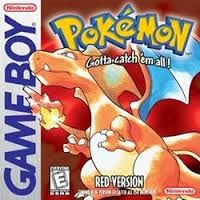
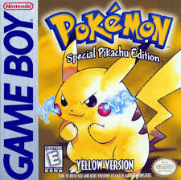

JOGOS E MÍDIAS
DE KANTO
Kanto foi revisitada em múltiplos jogos, séries e filmes ao longo dos anos, cada um trazendo novas perspectivas sobre a região original.

Os jogos que iniciaram tudo. Lançados originalmente no Game Boy, introduziram os 151 Pokémon originais e estabeleceram a fórmula clássica da série.

Versão especial inspirada no anime. O jogador começa com um Pikachu que segue sem Pokébola. Jessie, James e Meowth aparecem como rivais.
.jpg)
Remakes completos de Red e Blue para o Game Boy Advance. Gráficos atualizados, novas mecânicas e conexão com as Ilhas Sevii para mais conteúdo.

Jogos de Johto com Kanto inteira explorável após a Liga. Os jogadores podem revisitar todos os 8 ginásios de Kanto e enfrentar os líderes atualizados.

Reinvenção de Yellow para o Switch integrada ao Pokémon GO. Captura estilo smartphone, co-op local e visual completamente reconstruído em 3D.

A série animada que conquistou o mundo começa em Pallet Town com Ash Ketchum e Pikachu. As primeiras 5 temporadas se passam inteiramente em Kanto e nas Ilhas Orange.